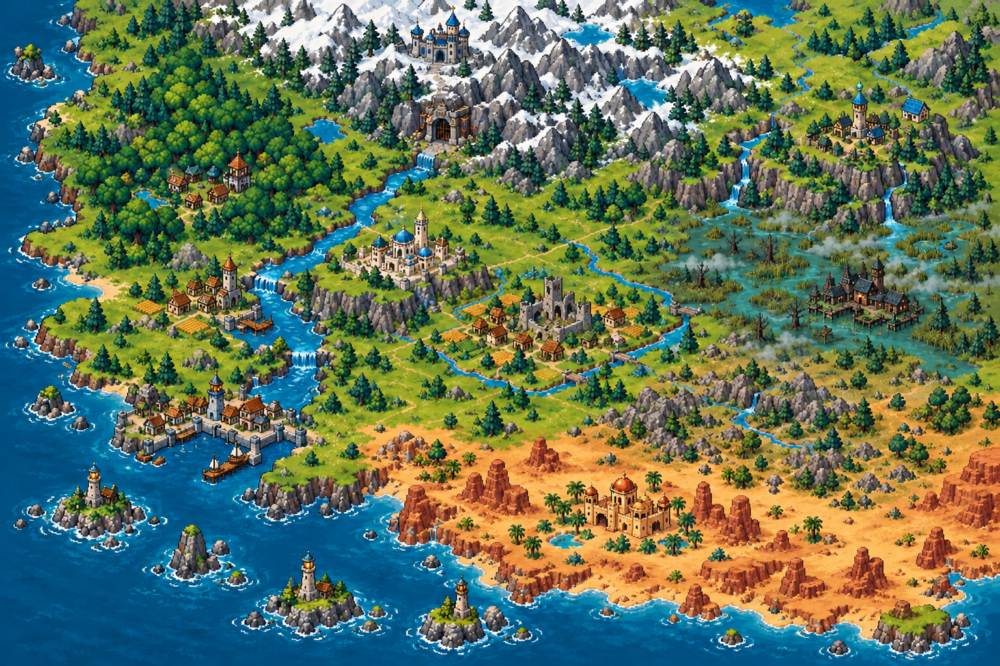

Ẩn Thành — pixel fantasy cho thế giới2.5D · Bản thiết kế nội bộ, không phải map trong game

Giới hạn: chưa nghiệm thu tỷ lệ, phân thủy đầy đủ, khoảng cách chiến thuật hoặc đường ngựa. Chủ thể thành phố vẽ tượng trưng, không cam kết toàn bộ đô thị được sản xuất. Không thể lấy ảnh này làm dữ liệu gameplay.